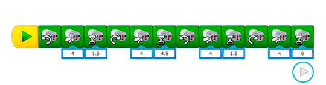
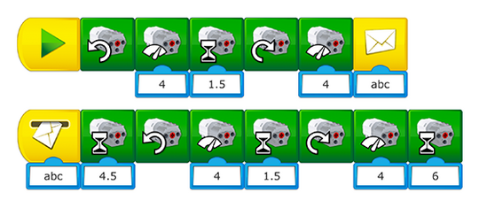

Programming Help
The sequence of actions that your students program may be composed of many programming blocks. If the program becomes very long, the students can use these two options:
-
Use the Pan arrows to navigate within the program.

-
Use the Send and Receive Message Block to cut and continue the program on another line.

Differentiation Opportunities
This project can be made more challenging by adding one or more of the following requirements:
-
Use more than two modules
-
The trajectory must be completed within one minute
-
The robot can only turn 90 degrees right during the trajectory
Use this task to evaluate whether or not your students have applied what they have learned in the previous task.
During the Test phase, make sure that the student works well in a team, justifies their best solution and uses the information that they collected during the Explore phase.
Feedback can be given on a scale of 1 to 4:
-
The student is unable to work well in a team, justify solutions and use information collected for further development.
-
The student is able to work in a team, collect and use information with guidance, or with help, to justify solutions.
-
The student is able to work in a team and contribute to the team discussions, justify solutions, and collect and use information about the content.
-
The student can justify and discuss solutions that allow for the collection and use of information.
Specific rubrics for assessing computational thinking skills can be found in the curriculum document.